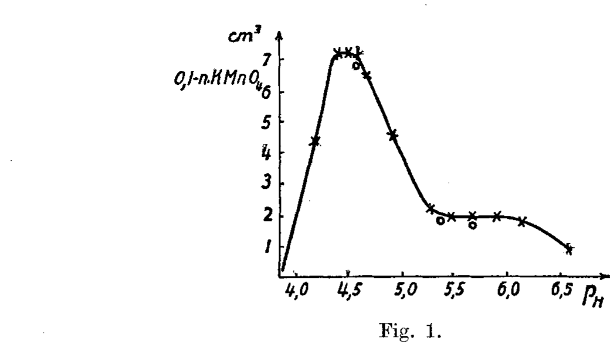
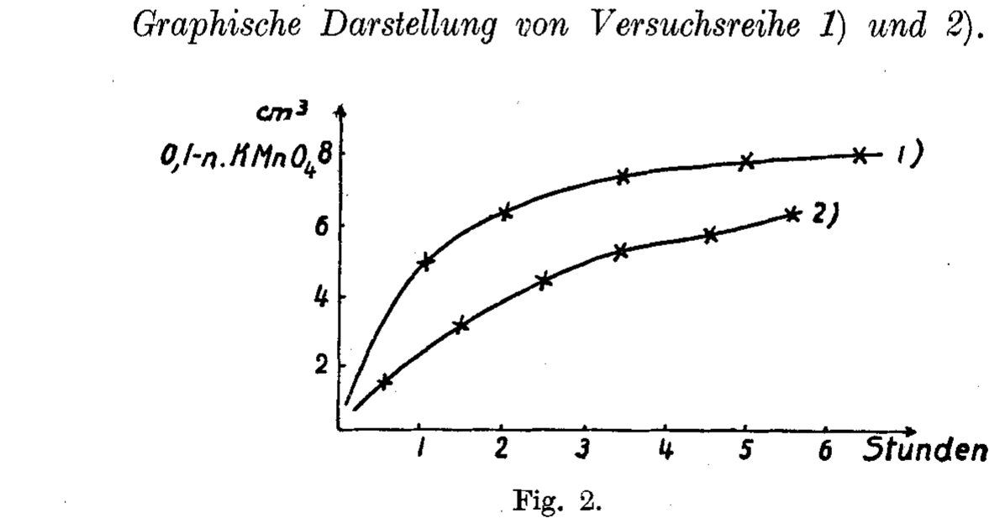
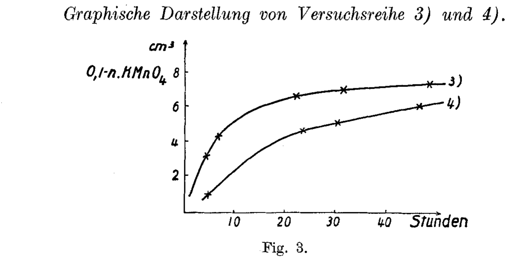

Polysaccharides XXXIX. On the enzymatic degradation of chitin and chitosan I.
P. Karrer and A. Hofmann · Helvetica Chimica Acta, vol. 12 (1929), pp. 616–637. Submitted 18 April 1929, Chemical Institute, University of Zürich.
| Source PDF | ~/karrer1929.pdf (22 pages, scanned reproduction) |
| OCR | Apple Vision (ocrmac), 300 DPI, 98–100% confidence |
| German source | karrer1929-chitin-chitosan-i.de.md (on the fleet wiki) — verbatim OCR for verification |
| Translator | Rhadamanthus (Claude), 2026-04-29 |
| Status | Working translation. Not a published edition. Caveats in § Translator notes. |
TL;DR
Karrer (Nobel 1937) and Hofmann discover and name two new enzymes from vineyard-snail (Helix pomatia) hepatopancreatic juice:
- Chitinase — cleaves chitin → d-N-acetyl-glucosamine. They achieve ~85% conversion at p_H 5.2 and isolate the monosaccharide in good crystalline yield (1.03 g from ~2 g chitin) — the first time anyone obtained N-acetyl-glucosamine from chitin in good yield.
- Chitosanase — cleaves chitosan, but the breakdown stops at ~⅓ of theoretical reducing power, leaving stable polyglucosamine intermediates of MW 540 / 630 / 657 (i.e. tri- and tetra-saccharides). Isolated as three fractions (Pr. I, Pr. II u, Pr. II L) and characterized as hydrochlorides, free sugars, and sulfates.
The paper also defends Karrer's earlier (1922) claim that chitin's glucosamine residues are linked through nitrogen atoms (the "chitopyrrole" evidence) against objections from Hess (1928) and Meyer & Mark (1928).
This is paper #39 of Karrer's polysaccharide series — a body of work that culminated in his 1937 Nobel Prize for the structures of carotenoids, flavins, and vitamin A.
Contents
- Introduction
- Experimental — preparation of starting material
- A. Enzymatic cleavage of chitin
- A.1 Native chitin
- A.2 Acidity dependence
- A.3 Kinetics + enzyme dose
- A.4 Maximum degradation
- A.5 Isolation of breakdown product
- A.6 Properties → d-N-acetyl-glucosamine
- B. Enzymatic cleavage of chitosan
- B.1 Concentration
- B.2 Acidity
- B.3 Kinetics + enzyme dose
- B.4 Maximum degradation
- B.5 Isolation of breakdown products
- B.6 Properties (hydrochlorides / free sugars / sulfates)
- Translator notes
Introduction
Investigations carried out in our laboratory in recent years²⁾ have shown that, under suitable conditions, native cellulose can be hydrolysed almost quantitatively to glucose by the ferments [enzymes] of the hepatopancreatic juice of the vineyard snail [Helix pomatia], whereas previously no enzyme had been known that could attack this resistant carbohydrate to more than a trace extent.
We further demonstrated that the enzyme-resistance of cellulose depends very strongly on its micellar structure: every reprecipitation, or every redissolution, of the cellulose — which entails a disruption of the crystallites and an enlargement of the inner surface — strongly reduces its enzymatic robustness.
"In natural structural cellulose, Nature attains the high enzymatic resistance which a structural substance must of course possess — not by means of any special chemical architecture, but rather by a tight and compact packing of the smallest particles; once that packing is disturbed, the relative enzymatic resistance disappears as well." ³⁾
A further support for this view lies in the recently obtained evidence¹⁾ that mercerization, which is associated with a disruption of the cellulose micelles, decreases the enzymatic resistance of the material — but to a much lesser degree if the mercerization is carried out under stretching of the fabric, in which case the alignment of the cellulose crystallites is better preserved.
These experiences gave us the impulse to test another natural structural substance — one for which no effective ferment had hitherto been known — namely chitin, with respect to its behaviour towards the snail enzyme. In fact finely ground chitin (from lobster shells) is also attacked by snail juice, although fairly slowly; and as in the case of cellulose, here too one can extraordinarily increase the susceptibility by reprecipitating the chitin, which is most conveniently done from cold hydrochloric acid. The polysaccharide undergoes no detectable chemical change under this treatment, provided it is performed rapidly; even after reprecipitation, it gives a completely negative response to Fehling's solution.
We give the chitin-cleaving ferment the name chitinase. It works best in weakly acidic solution. The optimum lies at about p_H = 5.2 (set with phosphate buffer).
The hydrolysis follows, at the start of the breakdown, approximately Schütz's rule — the amount of substrate cleaved is proportional to the square root of the cleavage time. Variation of the enzyme amount showed that, with otherwise identical reaction conditions and in the same time, doubling the enzyme corresponds to an increase in degradation by a factor of 1.3 to 1.5. All these relationships are very similar to those observed in the enzymatic saccharification of cellulose.
As the product of the enzymatic chitin hydrolysis one obtains N-acetyl-glucosamine, of which roughly 50% of the theoretical yield has so far been obtained in crystalline and pure form; the yield can probably be increased. Glucosamine itself appears to occur, if at all, only in traces.
N-acetyl-glucosamine was first isolated from chitin by S. Fränkel and A. Kelly, by hydrolysis with 70% sulfuric acid³⁾; the yield, however, was rather small. We will attempt to analyse the cleavage products of the enzymatic chitin hydrolysis as completely as possible, since this must reveal whether all of the acetyl groups present in chitin are bound to the nitrogen, or whether — as has also been suspected — this is only partly the case.
We have further investigated the behaviour of chitosan, which is prepared from chitin by heating with concentrated alkali, towards the snail ferment. It too is attacked rapidly, with the optimum acidity at p_H = 4.4–4.5.
The time-course of the enzymatic chitosan breakdown — measured by the reducing power — also follows, approximately though by no means exactly, Schütz's rule (data and curves: cf. experimental section, § B.3).
Comparing the action of enzyme amounts 1, 2, 4, 8 on the same chitosan quantity, one finds that on doubling the enzyme the degradation grows by approximately a factor of 1.7.
Both these measurements and those obtained for chitin breakdown refer to experiments carried out with sugar-free, but otherwise unfurther-purified, snail juice. Of course it remains possible that further-purified chitinase and chitosanase produce hydrolyses obeying different regularities.
It is a surprising result that the enzymatic hydrolysis of chitosan with snail enzyme leads neither to glucosamine nor to N-acetyl-glucosamine, but rather stops when the reducing power has reached about ⅓ of that which would arise on complete hydrolysis of chitosan to glucosamine. The breakdown product is not of uniform character; it can be isolated as the hydrochloride in the form of a colourless, amorphous powder, from which fractions can be extracted with hot alcohol, while the residue is very poorly soluble in alcohol. From these hydrochlorides the free polysaccharides can be precipitated by alcoholic diethylamine solution; these too could not so far be crystallized — nor could we manage to bring their sulfates, which are moderately soluble in dilute alcohol, into crystalline form.
Molecular weight determinations carried out on the free sugars in water gave, for the fractions obtained from the alcohol-soluble chlorides, a molecular weight of 540; the polysaccharide fraction prepared from the chloride poorly soluble in alcohol had molecular weights of 630–657. The former therefore have the average molecular weight of triglucosamine compounds (M = 501), the latter of tetraglucosamine bodies (M = 662).
These intermediate products of the chitosan breakdown still contain N-acetyl groups.
Their most striking property is the extraordinary stability towards mineral acids. Despite their easy solubility in water and hydrochloric acid, their reducing power does not change after one hour's boiling with 4.3% HCl; 8.1% HCl, on one-hour boiling, increases it only by 25%; and only on one-hour heating with 38% HCl is nearly complete decomposition to glucosamine — which we isolated crystallized — attained.
These polyglucosamines are thus more stable to hot HCl than any ordinary polysaccharide — even more stable than cellulose.
A few years ago, P. Karrer and Alex. Smirnoff obtained from chitin, by zinc-dust distillation, chitopyrrole (i.e. α-methyl-N-amyl-pyrrole), and drew the conclusion that the glucosamine residues in chitin must, at least in part, be linked through nitrogen atoms¹⁾. Perhaps the — comparatively, with respect to ordinary polysaccharides — greater stability of the above-named polyglucosamines and of chitin towards acids is to be traced to this nitrogen-chaining. P. Karrer and J. ter Kuile²⁾ have shown that the glucosido-trimethyl-ammonium salts
Against our view that the product of the chitin-zinc-dust distillation, chitopyrrole, argues for an N-linkage of the glucosamine residues in chitin, K. Hess³⁾ has — without experimental basis — raised the objection that chitopyrrole might owe its formation to a rearrangement phenomenon. Kurt H. Meyer and H. Mark⁴⁾ also believe that the appearance of acetyl-glucosamine on chitin hydrolysis is hard to reconcile with N-chaining. That this is no compelling argument follows, among other things, from the fact that Percy Brigl and Helmut Keppler⁵⁾ recently succeeded in preparing an N-acetyl-diglucosylamine octaacetate
If Brigl and Keppler wish to compare diglucosylamine with chitosan with respect to behaviour towards nitrous acid⁶⁾, it must nevertheless be said that in their compound the NH-group is bound in an acetal-like manner, whereas in glucosamine it is bound in an amine-like manner.
Since chitopyrrole could not be obtained from glucosamine itself by zinc-dust distillation⁷⁾, there is for the time being no reason to doubt that the compound is a primary product of the chitin breakdown.
References (introduction): ¹⁾ Helv. 5, 832 (1922). ²⁾ Helv. 5, 870 (1922). ³⁾ K. Hess, Die Chemie der Cellulose, Leipzig 1928, p. 102. ⁴⁾ B. 61, 1937 (1928). ⁵⁾ Z. physiol. Ch. 81, 42 (1929). ⁶⁾ Loc. cit., p. 42. ⁷⁾ Helv. 5, 838 (1922).
Experimental — preparation of starting material
The chitin used in the present work was obtained from lobster carapaces by the customary preparation methods¹⁾; the chitosan was prepared after the procedure of Löwy²⁾.
For purification we dissolved it in dilute acetic acid, precipitated it with alkali, washed and dried it.
Native chitin is admittedly distinctly attacked by snail enzyme, but the cleavage proceeds slowly, as is to be expected from the horn-like character of the material. Even fine pulverization does not achieve much. We therefore — in order to obtain a highly dispersed starting material — reprecipitated the chitin from HCl solution; the reprecipitated chitin proved to hydrolyse incomparably more rapidly than the native form.
That chitin, when it is dissolved only briefly at ordinary temperature in acid, can be reprecipitated unchanged has been shown by various researchers. Wester³⁾, for instance, reports that of 0.5136 g of chitin dissolved in 37% HCl, 0.4563 g of unchanged chitin could still be recovered after 12 hours.
To bring about as rapid a dissolution as possible, we first stirred the chitin powder with a little concentrated HCl into a homogeneous slurry, and only afterwards added the bulk of the concentrated HCl needed for solution. If one adds all of the acid at once without prior stirring, lumps form, dissolution requires more time, and filtration goes badly.
We then filtered the honey-yellow solution through an asbestos-charged Büchner funnel and precipitated the chitin by pouring it into a large volume of ice water; in this way it is obtained as white, gelatinous flakes. With this procedure it remained no longer than 5 minutes in solution, during which time no hydrolysis is to be feared. The reprecipitated chitin in fact showed no reducing power whatsoever.
To prevent caking on drying, and to preserve the highly disperse state of the substrate that is important for ready attack by enzymes, we proceeded by a method that has also been used in the preparation of finely divided lichenin⁴⁾. After the chitin had been washed acid-free, we removed the water by several days' immersion in absolute ether, drained off, and removed the residual ether in a vacuum desiccator. The light-grey chitin powder thus prepared swells when stirred with water and is well suited for enzymatic degradation.
References (experimental): ¹⁾ Th. R. Offer, Biochem. Z. 7, 117ff. (1908). ²⁾ E. Löwy, Biochem. Z. 23, 47ff. (1909). ³⁾ D. H. Wester, Arch. Pharm. 247, 292 (1909). ⁴⁾ P. Karrer and co-workers, Helv. 6, 801 (1923).
A. Enzymatic cleavage of chitin
A.1 Degradation of native chitin
| Component | Expt 1) | Expt 2) (control) |
|---|---|---|
| chitin powder, chitosan-free | 0.1 g | 0.1 g |
| enzyme solution (1 snail) | 2 cm³ | — |
| citrate-HCl buffer p_H 4.5 | 1 cm³ | 1 cm³ |
| distilled water | 2 cm³ | 4 cm³ |
| toluene | 2 drops | 2 drops |
Held 8 days at 36 °C with occasional shaking, then filtered through asbestos and reducing power determined by Bertrand:
| KMnO₄ consumption | |
|---|---|
| Expt 1) | 1.8 cm³ 0.1-N |
| Expt 2) | 0.1 cm³ 0.1-N |
Native chitin is, although very slowly, nonetheless distinctly attacked by the enzyme of the snail intestine.
A.2 Acidity dependence of reprecipitated chitin breakdown
0.200 g reprecipitated chitin + ½ snail enzyme, 2 cm³ citrate-HCl or citrate-NaOH buffer (Sörensen scale), 2 cm³ water, 3 drops toluene, at 36 °C with occasional shaking, 3 days. Filtered, Bertrand titrated:
| p_H | KMnO₄ 0.1-N consumed |
|---|---|
| 5.96 | 8.1 cm³ |
| 5.10 | 9.8 cm³ |
| 4.83 | 8.2 cm³ |
| 4.45 | 5.6 cm³ |
| 4.16 | 4.5 cm³ |
The p_H optimum of chitinase is approximately 5.2 — the same as for cellulase.
A.3 Kinetics and enzyme dose response
Series 1): 2 cm³ enzyme (¼ snail) per 0.1 g reprecipitated chitin, 3 cm³ phosphate buffer p_H 5.28, 5 cm³ water, 3 drops toluene, 36 °C.
| t (days) | KMnO₄ (cm³ 0.1-N) | KMnO₄ / √t |
|---|---|---|
| 0.25 | 1.5 | 3.0 |
| 1.0 | 3.1 | 3.1 |
| 2.1 | 4.7 | 3.2 |
| 5.2 | 7.4 | 3.2 |
| 14.0 | 9.5* | 2.5 |
* ≈52% degradation if reducing power is wholly due to acetyl-glucosamine.
Series 2): 1 cm³ enzyme (⅒ snail), otherwise identical:
| t (days) | KMnO₄ (cm³ 0.1-N) | KMnO₄ / √t |
|---|---|---|
| 1.0 | 2.4 | 2.4 |
| 5.2 | 4.7 | 2.1 |
| 14.0 | 6.7 | 1.8 |
The time-course of the enzymatic cleavage of reprecipitated chitin follows, at the beginning of the reaction, approximately Schütz's rule.
Comparing series 1 and 2 at equal times:
| t (days) | Enz 1 (½ snail) | Enz 2 (¼ snail) | Ratio |
|---|---|---|---|
| 1.0 | 2.4 | 3.1 | 1.3 |
| 5.2 | 4.7 | 7.1 | 1.5 |
| 14.0 | 6.7 | 9.5 | 1.4 |
Doubling the enzyme amount → 1.3–1.5× increase in degradation in equal times.
A.4 Maximum degradation
0.1 g reprecipitated chitin + 3 cm³ enzyme (1½ snails) + 3 cm³ phosphate buffer p_H 5.2 + 10 cm³ water + 3 drops toluene, held 10 days at 36 °C.
Bertrand titration: 15.4 cm³ 0.1-N KMnO₄ consumed → 85% degradation (taking N-acetyl-glucosamine's reducing power into account, see A.6).
A.5 Isolation of the breakdown product
Setup: 4.0 g reprecipitated chitin + 50 cm³ enzyme (25 snails) + 1 cm³ 0.1-N HCl + 3 cm³ toluene at 36 °C.
After 2 days the entire batch had set to a jelly (chitin swelling before dissolution). Diluted with 150 cm³ water. After 8 days half the chitin had dissolved; filtered, added 10 cm³ more enzyme (5 snails), let stand 2 more days at 36 °C.
Workup: 1. Precipitate enzyme proteins with 600 cm³ absolute alcohol, filter. 2. Concentrate filtrate in vacuum at 50 °C to 50 cm³. 3. Digest ¼ h with animal charcoal on water bath; filter. 4. Concentrate to 30 cm³; add 200 cm³ absolute alcohol → voluminous dirty-yellow precipitate (0.4 g grey powder; only trace reducing power). Filter. 5. Evaporate filtrate to dryness; reflux residue with 200 cm³ absolute methanol. 6. Filter hot, concentrate to 60 cm³, cool → pure white needles (in small druses) crystallize. Filter, wash with methanol then ether, dry in vacuum desiccator. Yield: 0.81 g. 7. From mother liquor: a further 0.22 g, identical melting point.
Total: 1.03 g pure crystallized substance from ~2 g of chitin — very probably the main breakdown product.
A.6 Properties of the breakdown product → d-N-acetyl-glucosamine
| Property | Value |
|---|---|
| Solubility | very readily in water; poorly in cold MeOH/EtOH; readily in hot alcohols |
| Aqueous reaction | neutral |
| Taste | strongly sweet |
| Melting point (decomp.) | indistinct ~190 °C |
| Reducing power (Bertrand) | 0.0500 g consumed 9.4 cm³ 0.1-N KMnO₄ (replicate identical) ≈ 0.0304 g glucose ≈ 60% of glucose's reducing power |
| Specific rotation, fresh | [α]_D = +55.6° (0.2180 g in 11.335 g H₂O, 1 dm tube) |
| Specific rotation, equilibrium (next day) | [α]_D = +41.3° |
| Mutarotation | yes |
| Phenylhydrazine + NaOAc, water bath | only slight amorphous ppt; no crystalline osazone |
All properties match the body that Fränkel and Kelly (1902) isolated in low yield from concentrated-H₂SO₄ chitin hydrolysates and identified as d-N-acetyl-glucosamine. Mutarotation was not noted by them, but their final [α]_D agrees with ours.
The only well-defined high-yield product of the enzymatic cleavage of chitin is therefore d-N-acetyl-glucosamine.
B. Enzymatic cleavage of chitosan
B.1 Influence of concentration
From a chitosan solution in dilute HCl (0.188 g per 5 cm³, set to p_H 4.6 with 0.1-N HCl), 5 cm³ aliquots were diluted with various volumes of dilute HCl at p_H 4.6, then 0.5 cm³ enzyme (¼ snail) + toluene added; 64 h at 36 °C; volume normalized; Bertrand titrated:
| Expt | Final volume | KMnO₄ 0.1-N |
|---|---|---|
| 1) | 5.5 cm³ | 18.0 cm³ |
| 2) | 19.0 cm³ | 13.1 cm³ |
| 3) | 50.0 cm³ | 13.0 cm³ |
| 4) | 100.0 cm³ | 7.5 cm³ |
Within moderate enzyme concentrations, the breakdown is independent of chitosan concentration.
B.2 Influence of acidity
Standard buffers cannot be used because chitosan-hydrochloride solutions are themselves strongly buffered. Each solution's p_H was determined colorimetrically with methyl-red against a Sörensen buffer-mixture colour scale.
Procedural note. The p_H must be measured after adding enzyme (the enzyme's protein content shifts the p_H slightly), but before adding toluene (the dye partitions into the toluene layer otherwise).
5.0 cm³ chitosan/HCl (0.100 g chitosan, p_H 5.8) + (5−x) cm³ water + x cm³ of {0.05-N HCl, or 1:10 acetic acid, or 0.05-N NaOH} + 1 cm³ enzyme (½ snail). Total 11 cm³, 1 cm³ pulled for p_H measurement, remainder + toluene held 20 h at 36 °C, Bertrand titrated:
HCl-acidic series:
| p_H | KMnO₄ 0.1-N consumed |
|---|---|
| 3.9 | — * (Fehling-pptable chitosan remains) |
| 4.2 | 4.3 cm³ |
| 4.1 | 7.2 cm³ |
| 4.5 | 7.2 cm³ |
| 4.6 | 7.1 cm³ |
| 4.7 | 6.5 cm³ |
| 5.0 | 7.8 cm³ |
| 5.3 | 2.3 cm³ |
| 5.5 | 2.2 cm³ |
| 5.7 | 2.1 cm³ |
| 5.9 | 2.2 cm³ |
| 6.2 | 2.0 cm³ |
| (6.6) ** | (1.0 cm³) |
Acetic-acid series (selected):
| p_H | KMnO₄ 0.1-N |
|---|---|
| 4.6 | 5.4 cm³ |
| 5.7 | 7.0 cm³ |
* Fehling-precipitable chitosan still present. ** Beginning of chitosan flocculation.
The breakdown curve has a sharp maximum at p_H 4.4–4.5. At equal p_H the breakdown is the same in HCl and acetic acid solutions. The acidity does not change during the breakdown.

B.3 Kinetics and enzyme dose response
Same chitosan/HCl stock for all four series (0.100 g per 5 cm³, p_H 5.3). Conditions held constant: substrate ≈1%, p_H 4.4–4.5, 36 °C. Enzyme amounts in ratio 1 : 2 : 4 : 8.
Series 1) — 2 cm³ enzyme (1 snail) per 0.1 g chitosan:
| t (h) | KMnO₄ 0.1-N |
|---|---|
| 1.0 | 4.8 cm³ |
| 2.0 | 6.3 cm³ |
| 3.5 | 7.4 cm³ |
| 4.4 | 7.7 cm³ |
| 6.5 | 8.1* cm³ |
* = 26% of glucosamine's reducing power.
Series 2) — 1 cm³ enzyme (½ snail):
| t (h) | KMnO₄ 0.1-N | √t |
|---|---|---|
| 0.5 | 1.4 cm³ | 1.97 |
| 1.5 | 3.2 cm³ | 2.60 |
| 2.5 | 4.5 cm³ | 2.85 |
| 3.5 | 5.5 cm³ | 2.95 |
| 4.5 | 5.9 cm³ | 2.79 |
| 5.5 | 6.5* cm³ | 2.78 |
* = 20.6% of glucosamine's reducing power.
Series 3) — 0.5 cm³ enzyme:
| t (h) | KMnO₄ 0.1-N |
|---|---|
| 4.0 | 3.2 cm³ |
| 6.0 | 4.3 cm³ |
| 22.0 | 7.0 cm³ |
| 30.5 | 7.5 cm³ |
| 48.0 | 7.9 cm³ |
Series 4) — 0.25 cm³ enzyme:
| t (h) | KMnO₄ 0.1-N |
|---|---|
| 4.8 | 0.7 cm³ |
| 23.0 | 5.0 cm³ |
| 30.0 | 5.5 cm³ |
| 46.5 | 6.5 cm³ |
| 94.0 | 8.2 cm³ |


Summary: the time-course follows Schütz's rule (substrate cleaved ∝ √t).
| Enzyme | 0.25 cm³ | 0.50 cm³ | 1.0 cm³ | 2.0 cm³ |
|---|---|---|---|---|
| Mean degradation | 1.0 | 1.7 | 2.8 | 4.8 |
| Single→double ratio | — | 1.70 | 1.65 | 1.72 |
Doubling the enzyme amount → 1.7× increase in degradation. (Compare 1.3–1.5× for chitin in A.3.)
B.4 Determination of the maximum degradation
Expt 1): 0.090 g chitosan + 10 cm³ dilute HCl + 1 cm³ enzyme (½ snail) + toluene, p_H 4.8, 36 °C. After 6 days another 1 cm³ enzyme added; total 12 days. 9.1 cm³ 0.1-N KMnO₄ consumed ≈ 30.2 mg glucosamine ≈ 33.6% of glucosamine's reducing power.
Expt 2): 0.090 g + 3 cm³ enzyme (1½ snails) + toluene, p_H 4.6, 21 days at 36 °C. 9.0 cm³ 0.1-N KMnO₄ ≈ 32.2%.
Expt 3) (fresh undialysed enzyme): 0.600 g chitosan + 1.5 cm³ fresh enzyme (1.3 snails), p_H 4.4, 36 °C, 10-cm³ aliquots:
| Time | KMnO₄ 0.1-N | % of glucosamine |
|---|---|---|
| 17 h | 8.7 cm³ | 28.0 % |
| 42 h | 9.1 cm³ | 29.3 % |
| 110 h | 9.9 cm³ | 32.0 % |
Maximum reducing-power yield in chitosan breakdown is ~33%, far below what would be expected for full breakdown to monosaccharide. The kinetic curves likewise asymptote here.
Therefore chitosan breakdown gives larger complexes, not monosaccharides.
It is curious that already after a short reaction time of the enzyme — when only ~⅙ of the final reducing power has been reached — alkali addition no longer precipitates unchanged chitosan. Either soluble intermediates form, or the breakdown products colloidally hold unchanged chitosan in solution.
B.5 Isolation of the breakdown products
Standard workup: 1. Precipitate enzyme proteins with alcohol-ether (4× volume). 2. Concentrate filtrate in vacuum. 3. Digest with animal charcoal. 4. Concentrate further. 5. Precipitate breakdown products with absolute alcohol.
Enzyme-protein control: 4 cm³ enzyme alone, processed identically, gave only 0.020 g residue — i.e. background contamination is small.
Setup 1
4.0 g chitosan + 100 cm³ dilute HCl + 15 cm³ enzyme (7½ snails), p_H 4.5, diluted to 200 cm³, + 5 cm³ toluene, 36 °C, 26 days until reducing power plateaued.
Workup → Pr. I (white product), 2.3 g, plus 0.8 g recovered from re-precipitation of the alcoholic filtrate, combined to 3.1 g total Pr. I.
Setup 2
6.7 g chitosan + 40 cm³ enzyme (20 snails) in 600 cm³ at p_H 4.0, 36 °C. After 21 days: 5 cm³ aliquots consumed 5.0 cm³ 0.1-N KMnO₄ ≈ 29% of glucosamine reducing power.
Workup gave two fractions, separated by alcohol solubility:
| Fraction | Behaviour | Yield |
|---|---|---|
| Pr. II u | poorly soluble in alcohol ("u" = unlöslich) | 2.8 g |
| Pr. II L | readily soluble in alcohol ("L" = löslich) | 1.6 + 1.1 = 2.7 g |
Note: the separation isn't sharp — further extraction of Pr. II u continually leaks more material into alcohol. The two fractions were treated as operationally distinct rather than chemically distinct.
B.6 Properties of the breakdown products
Since the breakdown was carried out in HCl-acidic solution, the products initially appear as hydrochlorides.
a) Hydrochlorides
Properties: very readily soluble in water; somewhat in MeOH; poorly in EtOH; insoluble in organic solvents. Aqueous solution acidic to litmus. No colour reaction with iodine/KI.
0.100 g Pr. I consumed 5.7 cm³ 0.1-N KMnO₄ → 22% of glucosamine hydrochloride's reducing power.
Elemental analyses of Pr. I:
| Determination | Found |
|---|---|
| 0.00645 g → 0.375 cm³ N₂ (16.5 °C, 735 mm) | N = 6.67% |
| 0.00501 g → 0.295 cm³ N₂ (17.0 °C, 734 mm) | N = 6.70% |
| 0.03800 g → 0.02304 g AgCl | Cl = 15.0% |
| 0.03695 g → 0.02264 g AgCl | Cl = 15.2% |
For comparison, the calculated hydrochloride of a trisaccharide of 3 glucosamine residues with loss of 2 H₂O: N = 6.89%, Cl = 17.2%.
N is right; Cl is below theoretical. The interpretation: not all nitrogen atoms are present as free, salt-forming amino/imino groups — some are still acetylated (as in chitosan).
Re-treatment of Pr. I with fresh enzyme (0.200 g + 1 cm³ enzyme, 12 days at 36 °C) raised reducing power to 29% of glucosamine — not exceeding the established asymptote.
Liberation of free sugar from the hydrochloride: simpler than the classical Abderhalden method⁵⁾. Dissolve hydrochloride in water, add absolute alcohol to incipient turbidity, drop in slightly more than the calculated diethylamine; the free sugar precipitates as white flakes (only traces of halogen). Re-dissolve in water, treat once more with diethylamine in alcohol, precipitate with abundant alcohol. Wash with alcohol then ether → halogen-free product.
⁵⁾ E. Abderhalden, Biochemisches Handlexikon II, 537.
b) Free sugars
Properties: very readily soluble in water; almost insoluble in MeOH/EtOH. Aqueous solution basic to litmus (contrast with hydrochlorides!). No iodine reaction. Weakly sweet.
| Fraction | Reducing power (% of glucosamine) | Specific rotation [α]_D | Cryoscopic MW |
|---|---|---|---|
| Pr. I, free sugar | 25.2 % | +3.7° | 657 |
| Pr. II u, free sugar | 25.2 % | +3.7° | 630 |
| Pr. II L, free sugar | 27.2 % | +6.8° | 540 |
For comparison, calculated MW of 3- and 4-glucosamine condensates (no acetyl): trisaccharide M = 501; tetrasaccharide M = 662.
The Pr. I and Pr. II u fractions are tetra-glucosamine-sized; Pr. II L is tri-glucosamine-sized. The presence of acetyl groups would shift things slightly upward.
Argument that the products are not "free monosaccharide + unchanged chitosan": chitosan is water-insoluble and gives a strong iodine reaction; these products are water-soluble and inert to iodine. Plus chitosan-sulfate is poorly water-soluble while these fractions' sulfates are very soluble.
Acid stability — 0.0500 g free sugar boiled 1 h under reflux in 5 cm³ HCl of varied concentration:
| HCl % | KMnO₄ consumed (cm³ 0.1-N) | % degradation (vs glucosamine) |
|---|---|---|
| 4.3 | 4.1 | 1.0 % |
| 8.1 | 5.0 | 5.0 % |
| 15.5 | 10.4 | 10.4 % |
| 38.0 | 12.8 | 12.8 % |
The acid stability of these polyglucosamines exceeds even that of starch and cellulose. Glucosamine hydrochloride is recovered crystallized only after 1 h reflux in concentrated HCl.
c) Sulfates
The sulfate is much less soluble in aqueous alcohol than the free sugar or hydrochloride. Method: dissolve free sugar (or, more conveniently, hydrochloride) in a little water, add absolute alcohol to incipient turbidity, drop in slightly more than the calculated H₂SO₄ diluted with alcohol/water → flocculent precipitate. If it balls up on the wall, decant, redissolve in water, reprecipitate with alcohol. Wash with alcohol, then ether.
Yields: 1.0 g Pr. II u (free sugar) → 1.25 g sulfate; 0.7 g Pr. II L (free sugar) → 0.8 g sulfate.
Properties: very readily soluble in water; almost insoluble in common organics. Aqueous solution acidic to litmus.
Gravimetric SO₄ analysis (via BaSO₄):
| Sample | Found H₂SO₄ |
|---|---|
| Pr. II u sulfate, run 1 (0.05125 g → 0.02395 g BaSO₄) | 19.6 % |
| Pr. II u sulfate, run 2 (0.11270 g → 0.05159 g BaSO₄) | 19.3 % |
| Pr. II L sulfate, run 1 (0.04957 g → 0.01957 g BaSO₄) | 16.5 % |
| Pr. II L sulfate, run 2 (0.08084 g → 0.03182 g BaSO₄) | 16.4 % |
Calculated H₂SO₄ for a glucosamine-tetrasaccharide with all amino groups saturated: 22.7%.
The two fractions have distinctly different acid-binding capacity (and so probably different acetyl content). Pr. II u (~19.5%) is closer to the fully-saturated tetrasaccharide than Pr. II L (~16.4%).
Zürich, Chemical Institute of the University.
Translator notes
-
OCR. Apple Vision via
ocrmacat 300 DPI returned 98–100% confidence on all 22 PDF pages. The PDF's pre-existing Adobe Capture OCR had the classic "letter+space" insertion bug ("au f ond d u b allon") and was discarded.clean_ocr.pyrejoined 69 line-break hyphens. Residual artifacts remain mostly in: - subscripts inside formulas (KMnO₄,H₂SO₄,BaSO₄came back asKMn0,,H,SO,,BaSO,) — reconstructed from context; - the figure 1 region of page 627 (data interleaved with the embedded curve image); - "p_H" was printed in 1929 asPₕand OCRed variously as Pa, Pf, Pr, PE, PH, Pm, Pu — all rendered asp_H. -
Paper boundaries. The PDF contains 22 pages but the Karrer paper is pages 616–637 within Helv. Chim. Acta vol. 12. The PDF begins mid-paragraph in a French paper by Zolliker (which ends "à Neuchâtel, Laboratoire de Chimie de l'Université") and ends with the start of a Rupe & Pieper paper on cyano-compound hydrogenation. Both have been trimmed away; this translation covers Karrer #39 only.
-
Specific rotations in the original were typeset as
[α]_D. OCR variously returned[al D,[alb,[a)D. All rendered uniformly. -
"Snail enzyme / snail juice" = digestive juice from the hepatopancreas of Helix pomatia (the European vineyard snail), a classic 1920s source of cellulase and other polysaccharide-cleaving enzymes. "1 snail" in the experimental section means one snail's worth of juice — a colloquial unit of enzyme activity.
-
"Bertrand titration" is the 1906 Bertrand method: reducing sugars reduce alkaline copper-tartrate (Fehling-like), the Cu₂O precipitate is dissolved in Fe³⁺/H₂SO₄, and the resulting Fe²⁺ is back-titrated with KMnO₄. Hence "consumed X cm³ 0.1-N KMnO₄" throughout.
-
Pr. I, Pr. II u, Pr. II L are operational designations the authors used for their three breakdown-product fractions: - Pr. = Präparat (preparation/sample); - u = unlöslich (insoluble in alcohol); - L = löslich (soluble in alcohol).
-
Figures 1, 2, 3 and the two structural formulas are reproduced from 300-DPI scans of the original PDF. Crop boxes derived from Apple Vision OCR bounding-box landmarks (page-number band, caption row, adjacent body-text rows) so the figures are cleanly bounded without neighboring-text bleed. Image files live in
karrer1929-figures/(in the standalone HTML build) or are referenced by relative path on the wiki page. -
Translation philosophy. Faithful where chemistry matters; light modernization of academic German prose (long sentences split, some passive voice activated). Direct quotations from Karrer's earlier work (the indented italic block in the introduction) preserved verbatim in spirit.
Last updated: 2026-04-29 by R (rhadamanthus). Source PDF in ~/karrer1929.pdf. German OCR sister-file: karrer1929-chitin-chitosan-i.de.md (on the fleet wiki).